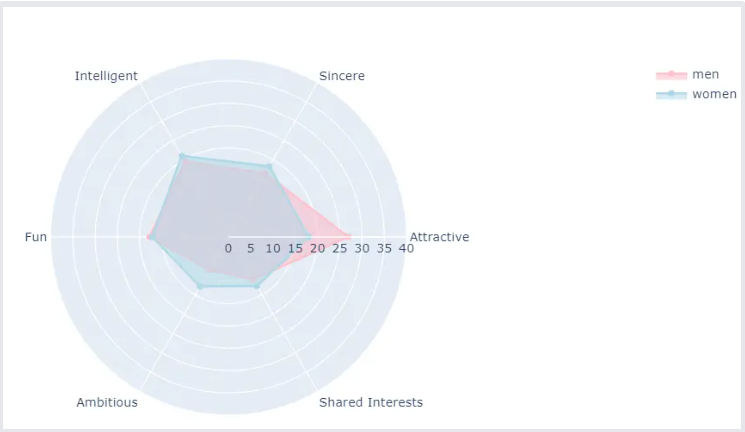

Hi, I'm Henri
Solutions Engineer passionate about building smart and simple solutions.
Social Tracker - Basildon Social Impact Hackathon
5 days, Monday, Tuesday, Wednesday, Thursday and Friday during my exam period. The timing could have been worse, it could have been during my vacation, I guess.
I chose to participate because of three main reasons.
I wanted to try the Hackathon experience without having to kill myself.
While we couldn't finish the project, it was the extra motivation I needed to learn Python Flask.
The event had a purpose I could stand behind.
And so, with the help of a retired professor, I went on to tackle this challenge, and came up with the idea of a social tracker to monitor and guide social policies. You will find the code on my GitHub or by clicking on the following link,
